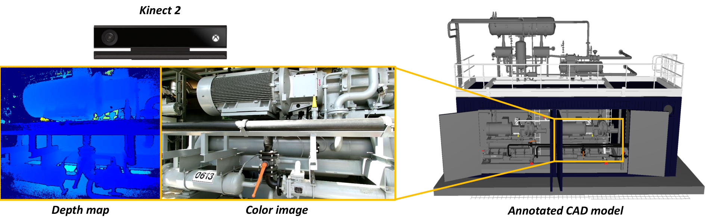

ARIA
The ICON project Augmented Reality for Industrial Applications was the follow-up project of GIPA. This time, the goal was to develop a guidance application for maintenance tasks on complex industrial machinery. By means of proof of concept we focused on the replacement of an oil filter in a cooling container of the company Evonik in Antwerp. More specifically, we made it possible for a layman to be guided using visual cues while wearing a head mounted device. More information can be found on the project website.

My main contributions in the project were the development of an accurate 3D position tracking system that uses depth sensing, more precisely the output of a time of flight (ToF) camera. We developed a system for finding the 3D pose of the camera relative to a known BIM model available in a remote database. The latter allowed to query additional (semantic) information of the components of the machine and to overlay this information in the field of view of the user. As this application is more time-critical than the as-built-as-planned application in GIPA, we further investigated how to speed-up the 3D pose tracking in order to make it real-time.
Our improved algorithm was presented at the International Conference on Machine Vision Applications (MVA) in 2017. The final tracking approach incorporating the matching with an existing BIM model, was presented at the International Conference on 3D Immersion (IC3D) in 2017.